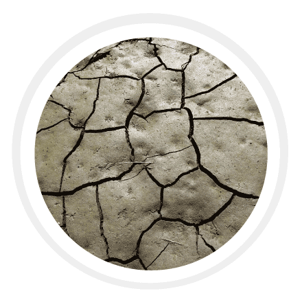

Clay:
Clay is the smallest particle among the other two types of soil. The particles in this soil are tightly packed together with each other with very little or no airspace. This soil has very good water storage qualities and makes it hard for moisture and air to penetrate into it. It is very sticky to the touch when wet but smooth when dried. Clay is the densest and heaviest type of soil which does not drain well or provide space for plant roots to flourish.
Loamy:
Loam is the fourth type of soil. It is a combination of sand, silt and clay such that the beneficial properties of each are included. For instance, it has the ability to retain moisture and nutrients; hence, it is more suitable for farming. This soil is also referred to as agricultural soil as it includes an equilibrium of all three types of soil materials, being sandy, clay, and silt, and it also happens to have humus. Apart from these, it also has higher calcium and pH levels because of its inorganic origins.

Sandy Soil:
The first type of soil is sand. It consists of small particles of weathered rock. Sandy soils are one of the poorest types of soil for growing plants because it has very low nutrients and poor water holding capacity, which makes it hard for the plant’s roots to absorb water. This type of soil is very good for the drainage system. Sandy soil is usually formed by the breakdown or fragmentation of rocks like granite, limestone and quartz.

Black soil:
Black soils are derivatives of trap lava and are spread mostly across interior Gujarat, Maharashtra, Karnataka, and Madhya Pradesh on the Deccan lava plateau and the Malwa Plateau, where there is both moderate rainfall and underlying basaltic rock. Because of their high clay content, black soils develop wide cracks during the dry season, but their iron-rich granular structure makes them resistant to wind and water erosion.

Alluvial Soil:
Alluvial soil has the highest productivity with respect to other soils. It is present mostly along rivers and is carried by its streams during weathering of rocks. The soil is generally covered by tall grasses and forests, as well as a number of crops, such as rice, wheat, sugarcane, tobacco, maize, cotton, soybean, jute, oilseeds, fruits, vegetables, etc. This soil has very soft strata with the lowest proportion of nitrogen and humus but with an adequate amount of phosphate.

Volcanic soil:
Volcanic soils form by weathering of volcanogenic materials. Their distribution on the Earth parallels that of terrestrial volcanoes, and they are found across various climates, but most of them are classified as Andisols. This soil group shares unique physical and chemical properties largely attributable to the formation of poorly crystalline and noncrystalline minerals, and the accumulation of organic matter.